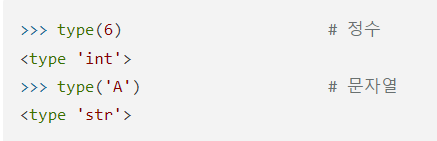
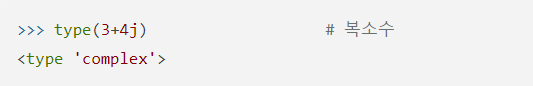
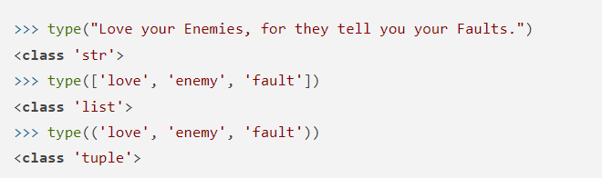
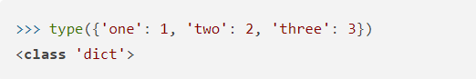

자료형
자료형은 type()을 통해서 확인할 수 있습니다.
이처럼 말입니다.
그렇다면 자료형에는 어떤 것이 있을까요?
파이썬 자료형에는 크게 숫자, 시퀀스, 매핑 등으로 나눌 수 있습니다.
숫자
숫자를 나타내는 자료형에는 정수(int), 부동소수점수(float), 복소수(complex)가 있습니다.
int는 정수(integer)를 나타냅니다. 또한 float은 부동소수점수(floating-point number)를 나타내는데 한마디로 소수점 이하를 표현할 수 있는 수이죠
여기서 특이한 점은 int끼리 계산한 결과가 자동으로 float으로 나타날 수 있다는 것이죠.
>>> 5 / 3
1.6666666666666667
복소수는 complex인데 여기서 허수는 i가 아닌 j로 나타낸답니다.
시퀀스
문자열(str), 리스트(list), 튜플(tuple), 사용자 정의 클래스가 시퀀스에 속합니다.
이 시퀀스는 for문에서 사용할 수 있으며 추가 및 삭제 또한 가능하죠.
매핑
딕셔너리는 key와 value로 이루어져 있으며 이런것을 매핑이라고 합니다.
이외에도 불(bool)이나 집합을 표현하는 set등이 있습니다.
다음 장에서 봅시다.